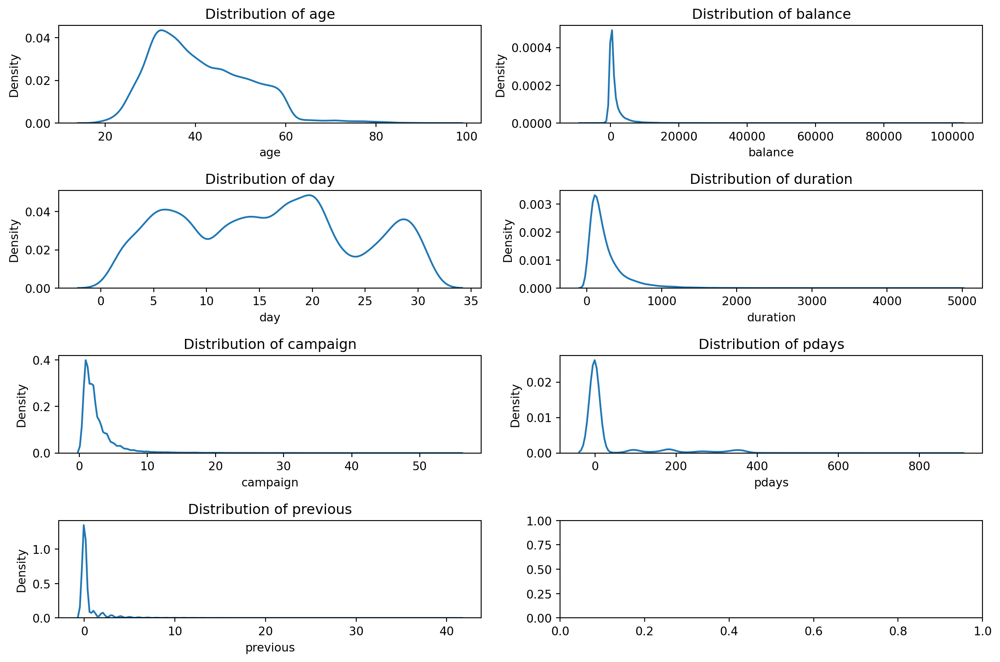

# Import library pengolahan struktur data
import pandas as pd
# Import library pengolahan angka
import numpy as npMachine Learning Workflow (Simplified) - Exercise
Bank Analysis
Task
- Classification
Objective
- Predict whether a bank client will subscribe to a term deposit.
Data Description
Download the dataset from the following link: Data
Bank Client Data
- age: Age of the client (numeric).
- job: Type of job (categorical: admin., unknown, unemployed, management, housemaid, entrepreneur, student, blue-collar, self-employed, retired, technician, services).
- marital: Marital status (categorical: married, divorced, single; divorced includes widowed individuals).
- education: Level of education (categorical: unknown, secondary, primary, tertiary).
- default: Has credit in default? (binary: yes, no).
- balance: Average yearly balance in euros (numeric).
- housing: Has a housing loan? (binary: yes, no).
- loan: Has a personal loan? (binary: yes, no).
Communication Data from the Last Campaign
- contact: Type of communication used (categorical: unknown, telephone, cellular).
- day: Last contact day of the month (numeric).
- month: Last contact month (categorical: jan, feb, mar, …, nov, dec).
- duration: Last contact duration in seconds (numeric).
Other Attributes
- campaign: Number of contacts performed during this campaign for this client (numeric, includes last contact).
- pdays: Number of days passed since the client was last contacted in a previous campaign (numeric, -1 means never contacted before).
- previous: Number of contacts performed before this campaign for this client (numeric).
- poutcome: Outcome of the previous marketing campaign (categorical: unknown, other, failure, success).
Target Variable (Desired Output)
- y: Has the client subscribed to a term deposit? (binary: yes, no).
Modeling Workflow
1. Import data to Python
2. Data Preprocessing
3. Training a Machine Learning Models
4. Test PredictionImport Data to Python
# Create a function to read the data
def read_data(fname):
data = pd.read_csv(fname)
print('Data shape raw :', data.shape)
print('Number of duplicate :', data.duplicated().sum())
data = data.drop_duplicates()
print('Data shape after dropping :', data.shape)
print('Data shape final :', data.shape)
return data# Read the Uber data
bank_df = read_data(fname='bank-data.csv')Data shape raw : (45211, 17)
Number of duplicate : 0
Data shape after dropping : (45211, 17)
Data shape final : (45211, 17)bank_df.head()| age | job | marital | education | default | balance | housing | loan | contact | day | month | duration | campaign | pdays | previous | poutcome | y | |
|---|---|---|---|---|---|---|---|---|---|---|---|---|---|---|---|---|---|
| 0 | 58.0 | management | married | tertiary | no | 2143.0 | yes | no | unknown | NaN | NaN | 261.0 | 1.0 | -1.0 | 0.0 | unknown | no |
| 1 | NaN | technician | single | secondary | no | 29.0 | yes | no | unknown | 5.0 | may | 151.0 | 1.0 | -1.0 | 0.0 | unknown | no |
| 2 | NaN | entrepreneur | married | secondary | no | 2.0 | yes | yes | unknown | 5.0 | may | 76.0 | 1.0 | -1.0 | 0.0 | unknown | no |
| 3 | NaN | blue-collar | married | unknown | no | 1506.0 | yes | no | unknown | 5.0 | may | 92.0 | 1.0 | -1.0 | 0.0 | unknown | no |
| 4 | 33.0 | unknown | single | unknown | no | 1.0 | no | no | NaN | 5.0 | may | 198.0 | 1.0 | -1.0 | 0.0 | unknown | no |
Data Preprocessing
- Input-Output Split, Train-Test Split
- Processing Categorical
- Imputation, Normalization, Drop Duplicates
def extractInputOutput(data,
output_column_name):
"""
Fungsi untuk memisahkan data input dan output
:param data: <pandas dataframe> data seluruh sample
:param output_column_name: <string> nama kolom output
:return input_data: <pandas dataframe> data input
:return output_data: <pandas series> data output
"""
output_data = data[output_column_name]
input_data = data.drop(output_column_name,
axis = 1)
return input_data, output_data
# (data, output_column_name) adalah argumen
# Argumen adalah sebuah variable.
# Jika fungsi tsb. diberi argumen data = bank_df,
# maka semua variabel 'data' di dalam fungsi akan berubah menjadi bank_df
# axis=0 → Menghapus baris berdasarkan index.
# axis=1 → Menghapus kolom berdasarkan nama kolom.# Jangan sampai salah urutan dalam penempatan return
X, y = extractInputOutput(data = bank_df,
output_column_name = "y")# Selalu cek
X.head()| age | job | marital | education | default | balance | housing | loan | contact | day | month | duration | campaign | pdays | previous | poutcome | |
|---|---|---|---|---|---|---|---|---|---|---|---|---|---|---|---|---|
| 0 | 58.0 | management | married | tertiary | no | 2143.0 | yes | no | unknown | NaN | NaN | 261.0 | 1.0 | -1.0 | 0.0 | unknown |
| 1 | NaN | technician | single | secondary | no | 29.0 | yes | no | unknown | 5.0 | may | 151.0 | 1.0 | -1.0 | 0.0 | unknown |
| 2 | NaN | entrepreneur | married | secondary | no | 2.0 | yes | yes | unknown | 5.0 | may | 76.0 | 1.0 | -1.0 | 0.0 | unknown |
| 3 | NaN | blue-collar | married | unknown | no | 1506.0 | yes | no | unknown | 5.0 | may | 92.0 | 1.0 | -1.0 | 0.0 | unknown |
| 4 | 33.0 | unknown | single | unknown | no | 1.0 | no | no | NaN | 5.0 | may | 198.0 | 1.0 | -1.0 | 0.0 | unknown |
y0 no
1 no
2 no
3 no
4 no
...
45206 yes
45207 yes
45208 yes
45209 no
45210 no
Name: y, Length: 45211, dtype: objectTrain-Test Split Kenapa? Karena tidak mau overfit data training Test data akan menjadi future data Kita akan latih model ML di data training, dengan CV (Cross-validation) Selanjutnya melakukan evaluasi di data testing
# Import train-test splitting library dari sklearn (scikit learn)
from sklearn.model_selection import train_test_split
# Train test split
X_train, X_test, y_train, y_test = train_test_split(X, y,
test_size = 0.25,
random_state = 12)Data Imputation Proses pengisian data yang kosong (NaN) Ada 2 hal yang diperhatikan: Numerical Imputation Categorical Imputation
X_train.isnull().sum()age 2626
job 2650
marital 2650
education 2542
default 2689
balance 2574
housing 2660
loan 2668
contact 2695
day 2617
month 2602
duration 2701
campaign 2614
pdays 2634
previous 2638
poutcome 2629
dtype: int64Data kategorik:
job marital education default housing loan contact month poutcome
Sisanya adalah data numerik
X_train.columnsIndex(['age', 'job', 'marital', 'education', 'default', 'balance', 'housing',
'loan', 'contact', 'day', 'month', 'duration', 'campaign', 'pdays',
'previous', 'poutcome'],
dtype='object')# Buat kolom numerik
numerical_column = ["age", "balance", "day", "duration",
"campaign", "pdays", "previous"]
# Seleksi dataframe numerik
X_train_numerical = X_train[numerical_column]import matplotlib.pyplot as plt
import seaborn as snsfig, ax = plt.subplots(nrows=4, ncols=2, figsize=(12, 8))
axes = ax.flatten()
for i, col in enumerate(X_train_numerical.columns):
sns.kdeplot(X_train_numerical[col], ax=axes[i])
axes[i].set_title(f'Distribution of {col}')
plt.tight_layout()
plt.show()
from sklearn.impute import SimpleImputer
def numericalImputation(data, numerical_column):
"""
Fungsi untuk melakukan imputasi data numerik
:param data: <pandas dataframe> sample data input
:param numerical_column: <list> list kolom numerik data
:return X_train_numerical: <pandas dataframe> data numerik
:return imputer_numerical: numerical imputer method
"""
# Filter data numerik
numerical_data = data[numerical_column]
# Buat imputer
imputer_numerical = SimpleImputer(missing_values = np.nan,
strategy = "median")
imputer_numerical.fit(numerical_data)
# Transform
imputed_data = imputer_numerical.transform(numerical_data)
numerical_data_imputed = pd.DataFrame(imputed_data)
numerical_data_imputed.columns = numerical_column
numerical_data_imputed.index = numerical_data.index
return numerical_data_imputed, imputer_numericalX_train_numerical, imputer_numerical = numericalImputation(data = X_train,
numerical_column = numerical_column)X_train_numerical.isnull().any()age False
balance False
day False
duration False
campaign False
pdays False
previous False
dtype: boolCategorical Imputation
# Ambil daftar nama kolom kategorikal
# Anda bisa langsung menuliskannya atau mengambil list jika jumlahnya banyak
X_train_column = list(X_train.columns)
categorical_column = list(set(X_train_column).difference(set(numerical_column)))categorical_column['month',
'housing',
'loan',
'poutcome',
'job',
'contact',
'education',
'marital',
'default']# Periksa lagi missing value
categorical_data = X_train[categorical_column]
categorical_data.isnull().sum()month 2602
housing 2660
loan 2668
poutcome 2629
job 2650
contact 2695
education 2542
marital 2650
default 2689
dtype: int64def categoricalImputation(data, categorical_column):
"""
Fungsi untuk melakukan imputasi data kategorik
:param data: <pandas dataframe> sample data input
:param categorical_column: <list> list kolom kategorikal data
:return categorical_data: <pandas dataframe> data kategorikal
"""
# seleksi data
categorical_data = data[categorical_column]
# lakukan imputasi
categorical_data = categorical_data.fillna(value="KOSONG")
return categorical_data
X_train_categorical = categoricalImputation(data = X_train,
categorical_column = categorical_column)X_train_categorical.isnull().sum()month 0
housing 0
loan 0
poutcome 0
job 0
contact 0
education 0
marital 0
default 0
dtype: int64Preprocessing Categorical Variables Kita tidak bisa memasukkan data categorical, jika tidak diubah menjadi numerical Solusi: One Hot Encoding (OHE)
categorical_ohe = pd.get_dummies(X_train_categorical)
categorical_ohe.head()| month_KOSONG | month_apr | month_aug | month_dec | month_feb | month_jan | month_jul | month_jun | month_mar | month_may | ... | education_secondary | education_tertiary | education_unknown | marital_KOSONG | marital_divorced | marital_married | marital_single | default_KOSONG | default_no | default_yes | |
|---|---|---|---|---|---|---|---|---|---|---|---|---|---|---|---|---|---|---|---|---|---|
| 37156 | False | False | False | False | False | False | False | False | False | True | ... | False | True | False | False | False | False | True | False | True | False |
| 20494 | True | False | False | False | False | False | False | False | False | False | ... | False | False | False | True | False | False | False | False | True | False |
| 35272 | False | False | False | False | False | False | False | False | False | True | ... | False | True | False | True | False | False | False | False | True | False |
| 22260 | False | False | True | False | False | False | False | False | False | False | ... | False | False | False | True | False | False | False | False | True | False |
| 2728 | False | False | False | False | False | False | False | False | False | True | ... | True | False | False | False | False | False | True | False | True | False |
5 rows × 53 columns
def extractCategorical(data, categorical_column):
"""
Fungsi untuk ekstrak data kategorikal dengan One Hot Encoding
:param data: <pandas dataframe> data sample
:param categorical_column: <list> list kolom kategorik
:return categorical_ohe: <pandas dataframe> data sample dengan ohe
"""
data_categorical = categoricalImputation(data = data,
categorical_column = categorical_column)
categorical_ohe = pd.get_dummies(data_categorical)
return categorical_ohe
X_train_categorical_ohe = extractCategorical(data = X_train,
categorical_column = categorical_column)
X_train_categorical_ohe.head()| month_KOSONG | month_apr | month_aug | month_dec | month_feb | month_jan | month_jul | month_jun | month_mar | month_may | ... | education_secondary | education_tertiary | education_unknown | marital_KOSONG | marital_divorced | marital_married | marital_single | default_KOSONG | default_no | default_yes | |
|---|---|---|---|---|---|---|---|---|---|---|---|---|---|---|---|---|---|---|---|---|---|
| 37156 | False | False | False | False | False | False | False | False | False | True | ... | False | True | False | False | False | False | True | False | True | False |
| 20494 | True | False | False | False | False | False | False | False | False | False | ... | False | False | False | True | False | False | False | False | True | False |
| 35272 | False | False | False | False | False | False | False | False | False | True | ... | False | True | False | True | False | False | False | False | True | False |
| 22260 | False | False | True | False | False | False | False | False | False | False | ... | False | False | False | True | False | False | False | False | True | False |
| 2728 | False | False | False | False | False | False | False | False | False | True | ... | True | False | False | False | False | False | True | False | True | False |
5 rows × 53 columns
# Simpan kolom OHE untuk diimplementasikan dalam testing data
# Agar shape-nya konsisten
ohe_columns = X_train_categorical_ohe.columns
ohe_columnsIndex(['month_KOSONG', 'month_apr', 'month_aug', 'month_dec', 'month_feb',
'month_jan', 'month_jul', 'month_jun', 'month_mar', 'month_may',
'month_nov', 'month_oct', 'month_sep', 'housing_KOSONG', 'housing_no',
'housing_yes', 'loan_KOSONG', 'loan_no', 'loan_yes', 'poutcome_KOSONG',
'poutcome_failure', 'poutcome_other', 'poutcome_success',
'poutcome_unknown', 'job_KOSONG', 'job_admin.', 'job_blue-collar',
'job_entrepreneur', 'job_housemaid', 'job_management', 'job_retired',
'job_self-employed', 'job_services', 'job_student', 'job_technician',
'job_unemployed', 'job_unknown', 'contact_KOSONG', 'contact_cellular',
'contact_telephone', 'contact_unknown', 'education_KOSONG',
'education_primary', 'education_secondary', 'education_tertiary',
'education_unknown', 'marital_KOSONG', 'marital_divorced',
'marital_married', 'marital_single', 'default_KOSONG', 'default_no',
'default_yes'],
dtype='object')Join data Numerical dan Categorical Data numerik & kategorik harus disatukan kembali Penyatuan dengan pd.concat
X_train_concat = pd.concat([X_train_numerical,
X_train_categorical_ohe],
axis = 1)X_train_concat.head()| age | balance | day | duration | campaign | pdays | previous | month_KOSONG | month_apr | month_aug | ... | education_secondary | education_tertiary | education_unknown | marital_KOSONG | marital_divorced | marital_married | marital_single | default_KOSONG | default_no | default_yes | |
|---|---|---|---|---|---|---|---|---|---|---|---|---|---|---|---|---|---|---|---|---|---|
| 37156 | 35.0 | 2749.0 | 13.0 | 127.0 | 1.0 | -1.0 | 0.0 | False | False | False | ... | False | True | False | False | False | False | True | False | True | False |
| 20494 | 30.0 | 443.0 | 12.0 | 80.0 | 2.0 | -1.0 | 0.0 | True | False | False | ... | False | False | False | True | False | False | False | False | True | False |
| 35272 | 39.0 | 4239.0 | 7.0 | 40.0 | 1.0 | -1.0 | 0.0 | False | False | False | ... | False | True | False | True | False | False | False | False | True | False |
| 22260 | 49.0 | 400.0 | 21.0 | 151.0 | 3.0 | -1.0 | 0.0 | False | False | True | ... | False | False | False | True | False | False | False | False | True | False |
| 2728 | 28.0 | 468.0 | 13.0 | 152.0 | 3.0 | -1.0 | 0.0 | False | False | False | ... | True | False | False | False | False | False | True | False | True | False |
5 rows × 60 columns
Standardizing Variables Menyamakan skala dari variabel input fit: imputer agar mengetahui mean dan standar deviasi dari setiap kolom transform: isi data dengan value yang sudah dinormalisasi output dari transform berupa pandas dataframe normalize dikeluarkan karena akan digunakan pada data test
from sklearn.preprocessing import StandardScaler
# Buat fungsi
def standardizerData(data):
"""
Fungsi untuk melakukan standarisasi data
:param data: <pandas dataframe> sampel data
:return standardized_data: <pandas dataframe> sampel data standard
:return standardizer: method untuk standardisasi data
"""
data_columns = data.columns # agar nama kolom tidak hilang
data_index = data.index # agar index tidak hilang
# buat (fit) standardizer
standardizer = StandardScaler()
standardizer.fit(data)
# transform data
standardized_data_raw = standardizer.transform(data)
standardized_data = pd.DataFrame(standardized_data_raw)
standardized_data.columns = data_columns
standardized_data.index = data_index
return standardized_data, standardizer
X_train_clean, standardizer = standardizerData(data = X_train_concat)
X_train_clean.head()| age | balance | day | duration | campaign | pdays | previous | month_KOSONG | month_apr | month_aug | ... | education_secondary | education_tertiary | education_unknown | marital_KOSONG | marital_divorced | marital_married | marital_single | default_KOSONG | default_no | default_yes | |
|---|---|---|---|---|---|---|---|---|---|---|---|---|---|---|---|---|---|---|---|---|---|
| 37156 | -0.568886 | 0.502047 | -0.354434 | -0.504073 | -0.569761 | -0.390255 | -0.292138 | -0.288297 | -0.25129 | -0.381193 | ... | -0.949599 | 1.632949 | -0.200227 | -0.291167 | -0.344163 | -1.117849 | 1.684999 | -0.293485 | 0.327359 | -0.133416 |
| 20494 | -1.058043 | -0.288093 | -0.479210 | -0.693995 | -0.236736 | -0.390255 | -0.292138 | 3.468647 | -0.25129 | -0.381193 | ... | -0.949599 | -0.612389 | -0.200227 | 3.434454 | -0.344163 | -1.117849 | -0.593472 | -0.293485 | 0.327359 | -0.133416 |
| 35272 | -0.177561 | 1.012588 | -1.103089 | -0.855631 | -0.569761 | -0.390255 | -0.292138 | -0.288297 | -0.25129 | -0.381193 | ... | -0.949599 | 1.632949 | -0.200227 | 3.434454 | -0.344163 | -1.117849 | -0.593472 | -0.293485 | 0.327359 | -0.133416 |
| 22260 | 0.800752 | -0.302827 | 0.643772 | -0.407091 | 0.096289 | -0.390255 | -0.292138 | -0.288297 | -0.25129 | 2.623341 | ... | -0.949599 | -0.612389 | -0.200227 | 3.434454 | -0.344163 | -1.117849 | -0.593472 | -0.293485 | 0.327359 | -0.133416 |
| 2728 | -1.253705 | -0.279527 | -0.354434 | -0.403050 | 0.096289 | -0.390255 | -0.292138 | -0.288297 | -0.25129 | -0.381193 | ... | 1.053076 | -0.612389 | -0.200227 | -0.291167 | -0.344163 | -1.117849 | 1.684999 | -0.293485 | 0.327359 | -0.133416 |
5 rows × 60 columns
Training Machine Learning
- Choose Score to optimize and Hyperparameter Space
- Cross-Validation: Random vs Grid Search CV
- Kita harus mengalahkan benchmark
Benchmark / Baseline - Baseline untuk evaluasi nanti -Karena ini klasifikasi, bisa kita ambil dari proporsi kelas target yang terbesar - Dengan kata lain, menebak hasil output marketing response dengan nilai “no” semua tanpa modeling
y_train.value_counts(normalize = True)
# baseline akurasi = 88%y
no 0.882624
yes 0.117376
Name: proportion, dtype: float64Import Model
# Import dari sklearn
from sklearn.neighbors import KNeighborsClassifier
from sklearn.linear_model import LogisticRegression
from sklearn.ensemble import RandomForestClassifierFitting Model
# Model K nearest neighbor
knn = KNeighborsClassifier()
knn.fit(X_train_clean, y_train)KNeighborsClassifier()In a Jupyter environment, please rerun this cell to show the HTML representation or trust the notebook.
On GitHub, the HTML representation is unable to render, please try loading this page with nbviewer.org.
KNeighborsClassifier()
# Model Logistic Regression
logreg = LogisticRegression(random_state = 123)
logreg.fit(X_train_clean, y_train)LogisticRegression(random_state=123)In a Jupyter environment, please rerun this cell to show the HTML representation or trust the notebook.
On GitHub, the HTML representation is unable to render, please try loading this page with nbviewer.org.
LogisticRegression(random_state=123)
# Model Random Forest Classifier
random_forest = RandomForestClassifier(random_state = 123)
random_forest.fit(X_train_clean, y_train)RandomForestClassifier(random_state=123)In a Jupyter environment, please rerun this cell to show the HTML representation or trust the notebook.
On GitHub, the HTML representation is unable to render, please try loading this page with nbviewer.org.
RandomForestClassifier(random_state=123)
# Model Random Forest Classifier 1
# Mari kita ubah hyperparameter dari random forest --> n_estimator
# Maksud & tujuan akan dijelaskan pada kelas Random Forest
# Tambahkan n_estimator = 500
random_forest_1 = RandomForestClassifier(random_state = 123,
n_estimators = 500)
random_forest_1.fit(X_train_clean, y_train)RandomForestClassifier(n_estimators=500, random_state=123)In a Jupyter environment, please rerun this cell to show the HTML representation or trust the notebook.
On GitHub, the HTML representation is unable to render, please try loading this page with nbviewer.org.
RandomForestClassifier(n_estimators=500, random_state=123)
Cek performa model di data training
benchmark = y_train.value_counts(normalize=True)[0]
benchmark0.8826235696590775# akurasi knn
knn.score(X_train_clean, y_train)0.9098737761000354# akurasi logistic regression
logreg.score(X_train_clean, y_train)0.9005839329951634# akurasi random forest
random_forest.score(X_train_clean, y_train)0.9999705084345877# akurasi random forest 1
random_forest_1.score(X_train_clean, y_train)1.0predicted_logreg = pd.DataFrame(logreg.predict(X_train_clean))
predicted_logreg| 0 | |
|---|---|
| 0 | no |
| 1 | no |
| 2 | no |
| 3 | no |
| 4 | no |
| ... | ... |
| 33903 | no |
| 33904 | no |
| 33905 | no |
| 33906 | no |
| 33907 | yes |
33908 rows × 1 columns
import joblib
# Simpan model logreg ke dalam folder yang sama dengan notebook
# dengan nama logreg.pkl
joblib.dump(logreg, "logreg.pkl")
#joblib.dump(knn, "knn.pkl")
joblib.dump(random_forest, "random_forest.pkl")
joblib.dump(random_forest_1, "random_forest_1.pkl")['random_forest_1.pkl']Test Prediction
def extractTest(data,
numerical_column, categorical_column, ohe_column,
imputer_numerical, standardizer):
"""
Fungsi untuk mengekstrak & membersihkan test data
:param data: <pandas dataframe> sampel data test
:param numerical_column: <list> kolom numerik
:param categorical_column: <list> kolom kategorik
:param ohe_column: <list> kolom one-hot-encoding dari data kategorik
:param imputer_numerical: <sklearn method> imputer data numerik
:param standardizer: <sklearn method> standardizer data
:return cleaned_data: <pandas dataframe> data final
"""
# Filter data
numerical_data = data[numerical_column]
categorical_data = data[categorical_column]
# Proses data numerik
numerical_data = pd.DataFrame(imputer_numerical.transform(numerical_data))
numerical_data.columns = numerical_column
numerical_data.index = data.index
# Proses data kategorik
categorical_data = categorical_data.fillna(value="KOSONG")
categorical_data.index = data.index
categorical_data = pd.get_dummies(categorical_data)
categorical_data.reindex(index = categorical_data.index,
columns = ohe_column)
# Gabungkan data
concat_data = pd.concat([numerical_data, categorical_data],
axis = 1)
cleaned_data = pd.DataFrame(standardizer.transform(concat_data))
cleaned_data.columns = concat_data.columns
return cleaned_datadef testPrediction(X_test, y_test, classifier, compute_score):
"""
Fungsi untuk mendapatkan prediksi dari model
:param X_test: <pandas dataframe> input
:param y_test: <pandas series> output/target
:param classifier: <sklearn method> model klasifikasi
:param compute_score: <bool> True: menampilkan score, False: tidak
:return test_predict: <list> hasil prediksi data input
:return score: <float> akurasi model
"""
if compute_score:
score = classifier.score(X_test, y_test)
print(f"Accuracy : {score:.4f}")
test_predict = classifier.predict(X_test)
return test_predict, scoreX_test_clean = extractTest(data = X_test,
numerical_column = numerical_column,
categorical_column = categorical_column,
ohe_column = ohe_columns,
imputer_numerical = imputer_numerical,
standardizer = standardizer)# Logistic Regression Performance
logreg_test_predict, score = testPrediction(X_test = X_test_clean,
y_test = y_test,
classifier = logreg,
compute_score = True)Accuracy : 0.9011# Random Forest Performance
rf_test_predict, score = testPrediction(X_test = X_test_clean,
y_test = y_test,
classifier = random_forest,
compute_score = True)Accuracy : 0.8990# Random Forest 1 Performance
rf_1_test_predict, score = testPrediction(X_test = X_test_clean,
y_test = y_test,
classifier = random_forest_1,
compute_score = True) Accuracy : 0.9014